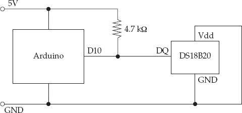
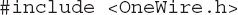
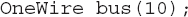
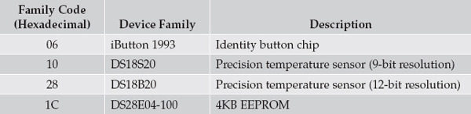
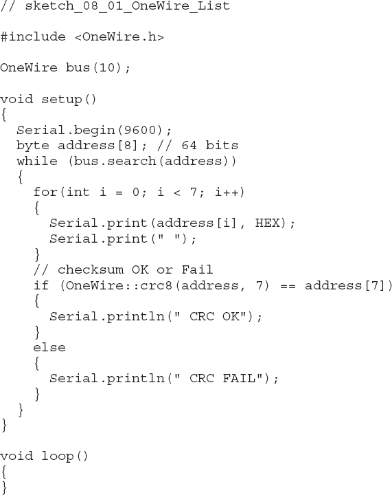
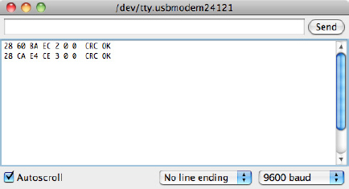
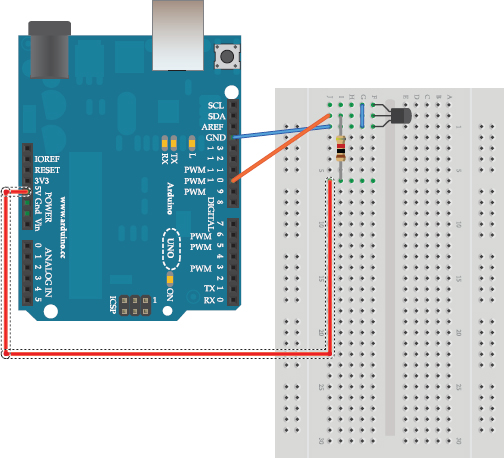
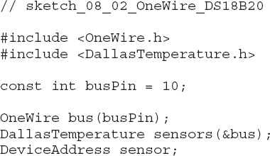
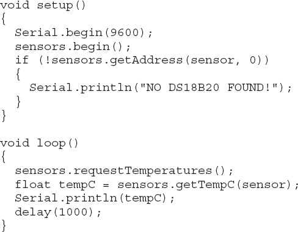
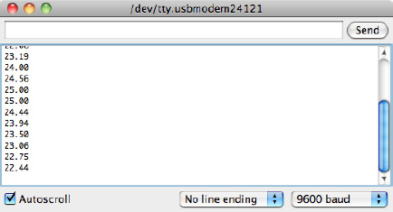

8
Interfacing with 1-Wire Devices
1-Wire is a bus standard designed to serve a similar purpose to the I2C bus (see Chapter 7)—that is, to allow microcontrollers to communicate with peripheral ICs with a minimal number of data lines. The 1-Wire standard created by Dallas Semiconductor has taken this to its logical extreme by reducing the data lines used to just one. The bus is slower than I2C, and it has the interesting feature of parasitic power, which allows remote devices to be connected to a microcontroller with just two wires, GND (ground), and combined power and data wire.
The 1-Wire bus standard has a much smaller range of potential devices than I2C, most manufactured by Dallas Semiconductor or Maxim. They include printer cartridge identity devices, EEPROM flash memory, and analog-to-digital converters (ADCs). However, the most commonly used 1-Wire device for hobbyists is the Dallas Semiconductor DS18B20 temperature sensor.

1-Wire Hardware
Figure 8-1 shows how you can connect a DS18B20 to an Arduino using just two connections and the DS18B20’s parasitic power mode.

Figure 8-1 Connecting a 1-Wire device to an Arduino
1-Wire is a bus, rather than a point-to-point connection, and you can chain together up to 255 devices using the arrangement shown in Figure 8-1. If you wish to use the device in “normal” power mode, then you can omit the 4.7 kΩ resistor and connect Vdd on the DS18B20 directly to 5V from the Arduino instead of to GND.
The 1-Wire Protocol
Just as with I2C, 1-Wire uses the master and slave concept for devices. The microcontroller is the master and the peripherals are the slaves. Each slave device is given a unique ID known as its “address” during manufacturing, so it can be identified on the bus when there are multiple slaves. This address is 64 bits in length, allowing for roughly 1.8×1019 different IDs.
The protocol is similar to I2C in that the bus line is switched from being an input to being an output by the master to allow two-way communication. However, rather than have separate clock and data signals, 1-Wire has just a single data line and uses long and short pulses to signify 1s and 0s. A pulse of 60 μS signifies a 0 and 15 μS indicates a 1.
The data line is normally HIGH, but when the microcontroller (master) needs to send a command to the device, it sends a special “reset” LOW pulse of at least 480 microseconds. The stream of 1 and 0 pulses then follow this.
The OneWire Library
The use of 1-Wire is greatly simplified by the OneWire library, which you can download from http://playground.arduino.cc/Learning/OneWire.
Initializing 1-Wire
The first step in using an Arduino as the master on a 1-Wire bus is to import the OneWire library using this command:

The next step is to create an instance of OneWire and specify the Arduino pin to be used for the 1-Wire data bus. You can combine these into a single command, and you can use any Arduino pin for the bus; simply supply the pin number as the parameter:

In the example, the bus will be initialized on pin D10 of the Arduino.
Scanning the Bus
Because each slave device on the bus is allocated a unique ID during manufacturing, you need a way to find the devices on the network. It would be unwise to hard-code device addresses into the Arduino sketch because if you were to replace one of the slave devices, the new device would have a different address than the old one and you wouldn’t be able to use it. So the master (Arduino) can essentially produce a list of the devices on the bus. What is more, the first 8 bits of the address indicate the “family” of device, so you can tell if the device is, say, a DS18B20 or some other type of device.
Table 8-1 lists some of the most common family codes for 1-Wire. You can find a more complete list here: http://owfs.sourceforge.net/family.html.

Table 8-1 Family Codes for 1-Wire Addresses
The OneWire library has a search function that you can use to find all the slave devices on the bus. The following example code lists the addresses of all the devices on the bus to the Serial Monitor:

Figure 8-2 shows the result of running this sketch with two DS18B20 temperature sensors attached to an Arduino. Note that for both devices, the “family” code is contained in the first byte and is 28 (hexadecimal) in both cases.

Figure 8-2 Listing 1-Wire slave devices
The search function requires an array of 8 bytes in which to put the next address that it finds. If no more devices are to be found, it will return 0. This allows the while loop in the previous example to keep iterating until all the addresses have been displayed. The last byte of the address is actually a cyclic redundancy check (CRC) that ensures the integrity of the address. The OneWire library includes a CRC checking function.
Using the DS18B20
The following example illustrates the use of OneWire with the DS18B20 temperature sensor. Figure 8-3 shows a DS18B20 chip connected to an Arduino. Note how the chip itself is just a three pin transistor-like chip.

Figure 8-3 A DS18B20s connected to an Arduino
The Dallas Semiconductor temperature sensor has its own library that makes requesting the temperature and decoding the result easier. The DallasTemperature library can be downloaded from here: https://github.com/milesburton/Arduino-Temperature-Control-Library.


This example displays the temperature in Celsius from a single temperature sensor in the Serial Monitor window (Figure 8-4).

Figure 8-4 Displaying the temperature using a DS18B20
This example uses just one temperature sensor, but you can easily extend it to use multiple sensors. The DallasTemperature library wraps the OneWire address discovery process in the getAddress function, the second parameter of which is the index position of the sensor. To add a second sensor, you need to add a new variable for its address and then set that address using getAddress. You can download an example of using two sensors from the book’s website as sketch_08_03_OneWire_DS18B20_2.
Summary
In this chapter, you learned a little about the 1-Wire bus and how to use it with the popular DS18B20 temperature sensor.
In the next chapter, we look at yet another kind of serial data interface called SPI.